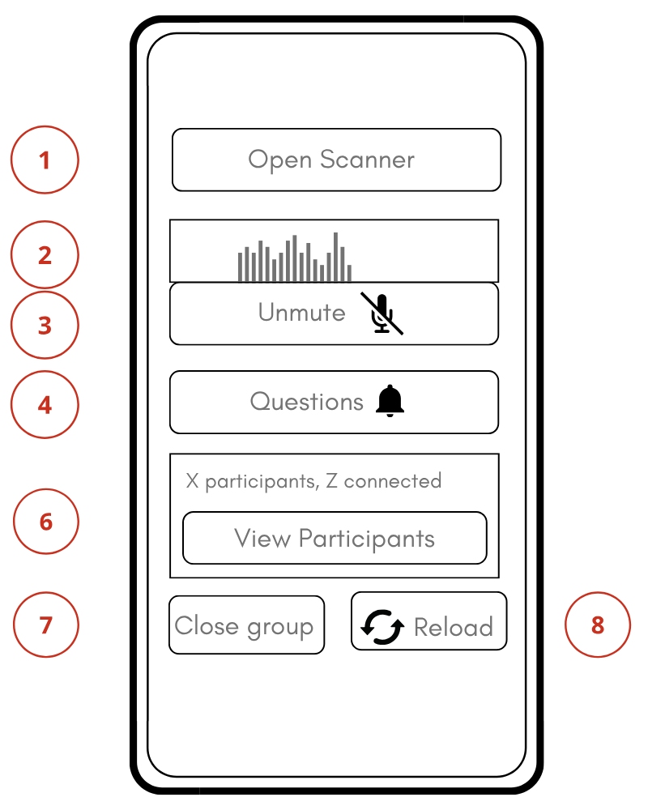
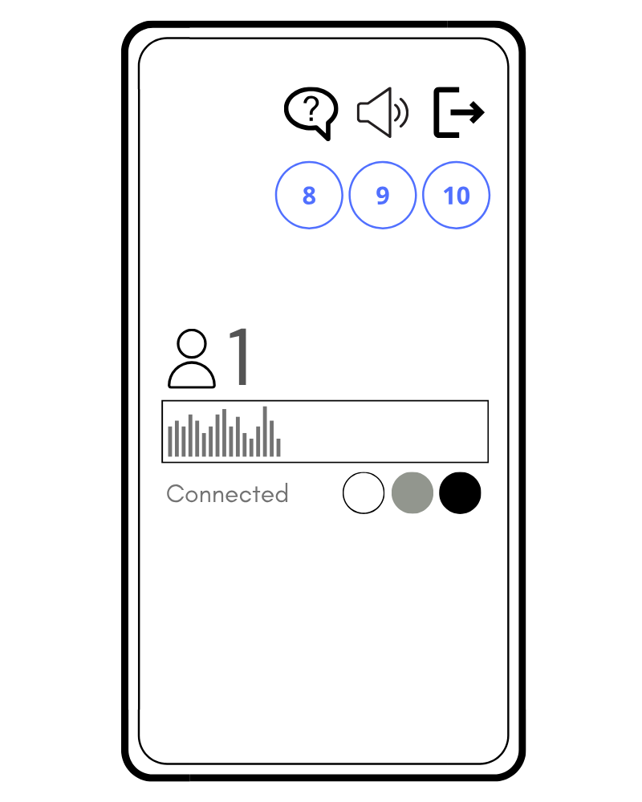
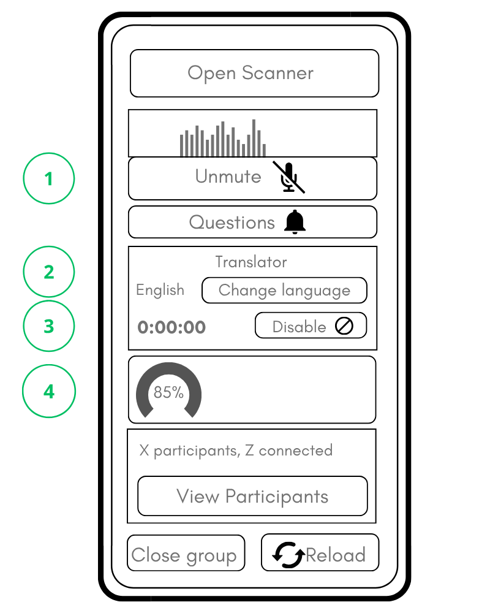
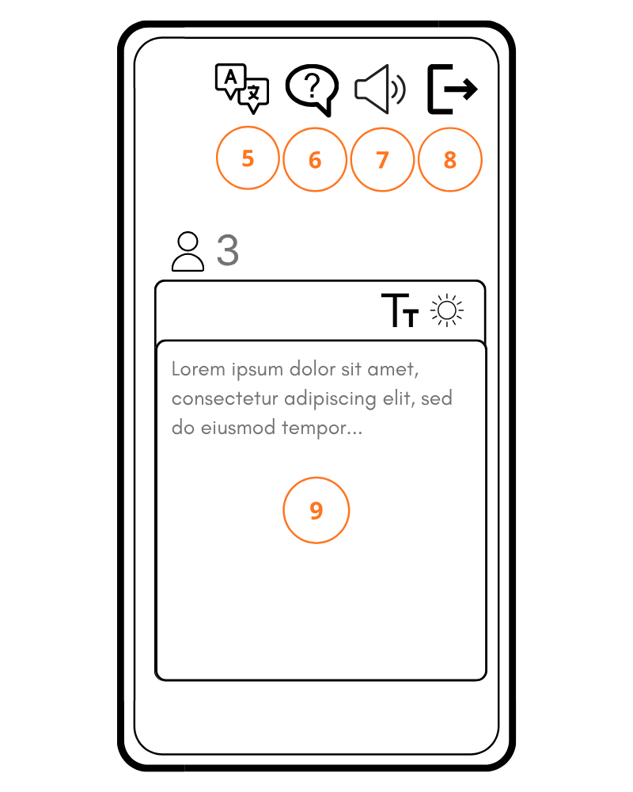

グループが到着する前に、スマートフォンに以下の2つのものが用意されていることをご確認ください
これでグループが作成されました。
まだ変化はありませんが、正常です。
参加者全員がカードを持っていることを確認してください。
次に、グループに次のようにお願いしてください：
QRコードの読み取り方が分からない方がいても、問題ありません：
さあ、次はあなたの番です。
ヒント：ご希望であれば、カードを配布する前にスキャンしておくことも可能です。
完了したら：
バッテリーを節約するため、スキャナーを閉じてください。
「参加者を表示」をタップしてください（6）。リストが表示されます：
緑色は、すべて正常であることを示しています。
後で誰かに問題が発生した場合、この番号で該当する参加者を特定することができます。


動くバー（スペクトル表示（2））が表示されます。
これは単に、あなたの声が送信されていることを示しています。
動きが見られない場合：
音声品質の確認：レベルメーターの下に、音声品質を示す円形のインジケーター（5）が表示されます。
話している最中にインジケーターが黄色や赤色に変わったら：
大声ではなく、普段通りの声でお話しください。穏やかで安定した声で話すのが最適です。
グループに知らせる：
誰かが質問を送信した場合は（10）：
「グループを閉じる」（7）をタップしてください。
同じグループで別のツアーを計画している場合は、グループを開いたままにしておくこともできます。そうすれば、 すべてのカードを再度スキャンする必要がなくなります。
重要：
このマニュアルは、グループを開く際に「AI Live Translation」アドオンを有効にした場合にのみ適用されます。
当社にアドオンの提供を依頼していない場合、またはアドオンを有効にしない場合、Nubart LIVEの動作は 1ページ目のメインガイドに記載されている内容と全く同じになります。
グループを開くと、次のようなメッセージが表示されます：
「翻訳を有効にしますか？」
ライブ翻訳をご希望の場合は、「はい」をタップしてください。なお、これは有料機能であり、 利用時間は時間単位で課金されますので、 あらかじめご了承ください。
翻訳なしの通常のツアーをご希望の場合は、「いいえ」をタップしてください。
ツアー中に使用する言語を選択してください。ツアー中に別の言語に変更したい場合は、いつでもこの選択を変更できます。
翻訳アドオンが有効になっている間、画面上に次のような表示がされた四角形が表示されます：
使用タイマーに関する情報


ミュート機能（3） （3）は、通常のNubart LIVEバージョンとまったく同じように機能します：
翻訳アドオンが有効になっている場合、訪問者には、あなたの発言が 選択された言語に翻訳される旨のメッセージ
（ここで表示される言語は、訪問者のブラウザ言語に基づきます）
また、画面上部のメニューからいつでも言語を変更できることも通知されます。
参加者がガイドとして話すのと同じ言語を選択した場合、参加者はガイドの声を聞き、 標準のNubart LIVE画面が表示されます。
ガイドが話す言語とは異なる言語を選択した場合、画面には以下の内容が表示されます：
また、参加者は以下の操作が可能です：
訪問者に翻訳システムの説明をする必要はありません。
普段通りにお話しください。
それ以外はすべて自動的に行われます。
事前に一度、システムをお試しください。
可能であれば、ツアー直前にNubart LIVEをお試しください。無料のテストキットをご用意しております！
通常、短時間のテストで安心感を得ることができます。
目的地での携帯電話の電波状況やWi-Fiを確認してください。
従来の無線ガイドシステムとは異なり、Nubart LIVEはインターネットを利用します。
ツアー中に接続が切断された場合は：
ガイドには最新のスマートフォンをご使用ください
参加者にとっては、非常に古いスマートフォンでも問題なく機能します。
ただし、ガイドのスマートフォンには多くの役割があります：
最適な結果を得るために：
可能であれば、ヘッドセットをご使用ください
都市部や工場内では、周囲が騒がしい場合があります。
Nubart LIVEはスマートフォンの内蔵マイクで動作しますが、以下の点にご注意ください：
これは特に都市部や工場などで役立ちます。
翻訳アドオンを使用する際は、音声のフィードバックを避けてください
本システムは、意図的に非常に高感度になるよう設計されています。
そのため：
実際の使用においては：
これは物理的なオーディオの問題であり、システムの不具合ではありません。
レイテンシー
次のような現象は正常です：
話すペースを遅くしたり、間を空けたりする必要はありません。
普段通りに自然にお話しください。システムが自動的に調整されます。
実際の声と参加者が聞く声の間に遅延が生じ、参加者に不快感を与える場合は、声を小さくするか、参加者に「エコー効果」を防ぐため、あなたから少し距離を置くよう提案してください。
同時に配信できるスマートフォンは1台のみです。
ツアー中に複数のガイドが話す必要がある場合は、以下の方法があります：
ワイヤレスマイクシステムをご利用の場合：
Nubartカードは再利用可能ですが、譲渡することはできません。
数日間のツアーの場合：
可能であれば：
ガイド付きツアーでは、携帯電話を長時間使用することがよくあります。
推奨事項：
ツアー終了後：
音声が聞こえない、または翻訳が行われない場合
以下の点をご確認ください：
信号が非常に弱い場合は、通常、マイク入力の音量が低すぎることを意味します。
ワイヤレスマイクを使用しており、信号が弱い場合：
翻訳の内容が意味をなさない場合
これは、ほとんどの場合、音声入力の品質が悪いことが原因です。
話している間、オーディオ品質インジケーター（5）をご確認ください。
品質インジケーターが黄色または赤色の場合：
翻訳で同じ文が繰り返されます
これは通常、近くの携帯電話の電波によって、マイクが自身の翻訳音声を出力していることを意味します。
解決策：
訪問者はテキストは表示されていますが、音声が聞こえません
訪問者に以下の手順を実行するようお願いしてください：